Mapping Guerry's Moral Statistics with Cheysson Palettes
Michael Friendly
2026-01-07
Source:vignettes/guerry-maps.Rmd
guerry-maps.RmdIntroduction
This vignette demonstrates how to create thematic (choropleth) maps
using the ggCheysson package with André-Michel Guerry’s
pioneering data on moral statistics of France from 1833. This represents
a fascinating combination of:
- Historical data: Guerry’s groundbreaking social statistics from 1830s France
- Historical cartography: The visual style of Émile Cheysson’s Albums de Statistique Graphique (1879-1897)
- Modern tools: R, ggplot2, and spatial data packages
Guerry (1802-1866) was among the first to use statistical maps to visualize social phenomena across regions. His major work predated Cheysson’s work on the Albums, making this a fitting tribute to two pioneers of statistical graphics. In Guerry (1833), he displayed six thematic choropleth maps of France, using a monochrome shading scheme. What if Guerry could have re-done his maps using Cheysson’s style?
Loading Fonts
# Load Cheysson fonts
load_cheysson_fonts(method = "showtext")
showtext::showtext_auto()Preparing the Data
Load and Examine Guerry’s Data
# Load the dataset
data(Guerry, package = "Guerry")
# Key variables for mapping
vars_of_interest <- c("Crime_pers", "Crime_prop", "Literacy",
"Donations", "Infants", "Suicides")
# View summary
str(Guerry[, c("dept", "Department", vars_of_interest)])
#> 'data.frame': 86 obs. of 8 variables:
#> $ dept : int 1 2 3 4 5 7 8 9 10 11 ...
#> $ Department: Factor w/ 86 levels "Ain","Aisne",..: 1 2 3 11 40 4 5 6 7 8 ...
#> $ Crime_pers: int 28870 26226 26747 12935 17488 9474 35203 6173 19602 15647 ...
#> $ Crime_prop: int 15890 5521 7925 7289 8174 10263 8847 9597 4086 10431 ...
#> $ Literacy : int 37 51 13 46 69 27 67 18 59 34 ...
#> $ Donations : int 5098 8901 10973 2733 6962 3188 6400 3542 3608 2582 ...
#> $ Infants : int 33120 14572 17044 23018 23076 42117 16106 22916 18642 20225 ...
#> $ Suicides : int 35039 12831 114121 14238 16171 52547 26198 123625 10989 66498 ...Load the Map
The gfrance85 object is a SpatialPolygonsDataFrame.
We’ll convert it to an sf object for modern spatial handling.
# Load the map
data(gfrance85, package = "Guerry")
# Convert to sf object (simple features)
france_sf <- st_as_sf(gfrance85)
# Check structure
head(france_sf[, c("Department", "Region")])
#> Simple feature collection with 6 features and 2 fields
#> Geometry type: MULTIPOLYGON
#> Dimension: XY
#> Bounding box: xmin: 595532 ymin: 1858801 xmax: 975716 ymax: 2564568
#> CRS: NA
#> Department Region geometry
#> 0 Ain E MULTIPOLYGON (((801150 2092...
#> 1 Aisne N MULTIPOLYGON (((729326 2521...
#> 2 Allier C MULTIPOLYGON (((710830 2137...
#> 3 Basses-Alpes E MULTIPOLYGON (((882701 1920...
#> 4 Hautes-Alpes E MULTIPOLYGON (((886504 1922...
#> 5 Ardeche S MULTIPOLYGON (((747008 1925...Join Data with Map
# Convert variables to ranks (since they're on different scales)
guerry_ranked <- Guerry
for (var in vars_of_interest) {
guerry_ranked[[paste0(var, "_rank")]] <- rank(guerry_ranked[[var]], na.last = "keep")
}
# Join with spatial data
france_data <- merge(france_sf, guerry_ranked,
by = "Department",
all.x = TRUE)
# Check the join
cat("Departments in map:", nrow(france_sf), "\n")
#> Departments in map: 85
cat("Departments with data:", sum(!is.na(france_data$Crime_pers)), "\n")
#> Departments with data: 0Creating Choropleth Maps
Crime Against Persons (Sequential Palette)
# Map of crimes against persons
p1 <- ggplot(france_data) +
geom_sf(aes(fill = Crime_pers_rank), color = "black", linewidth = 0.3) +
scale_fill_cheysson("1895_04", discrete = FALSE,
name = "Rank") +
labs(
title = "Crimes Against Persons",
subtitle = "France, 1830s (ranked by department)",
caption = "Data: André-Michel Guerry (1833)"
) +
theme_cheysson_map() +
theme(
plot.title = element_text(size = 16, face = "bold"),
plot.subtitle = element_text(size = 12),
legend.position = "right"
)
print(p1)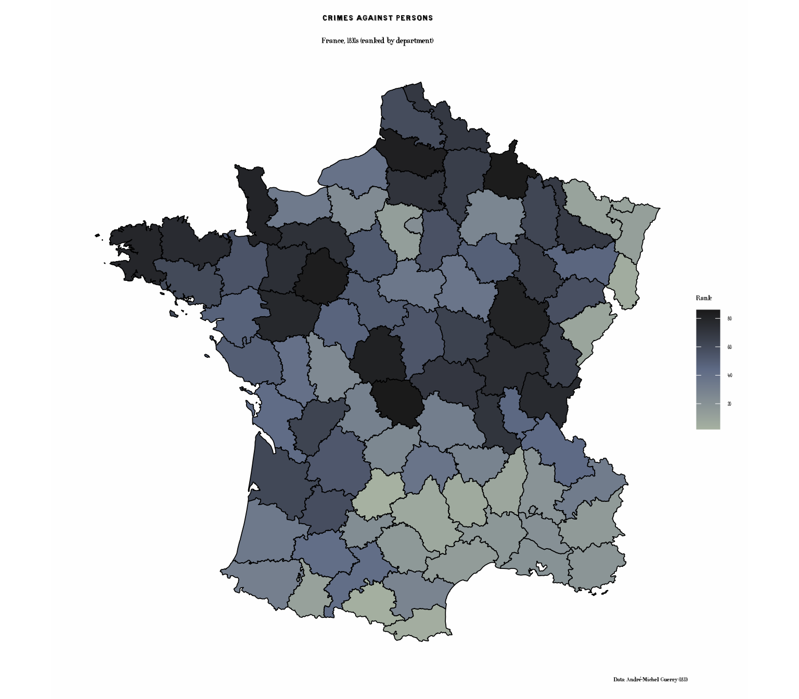
Property Crime (Different Sequential Palette)
p2 <- ggplot(france_data) +
geom_sf(aes(fill = Crime_prop_rank), color = "black", linewidth = 0.3) +
scale_fill_cheysson("1895_04", discrete = FALSE,
name = "Rank") +
labs(
title = "Crimes Against Property",
subtitle = "France, 1830s (ranked by department)",
caption = "Data: André-Michel Guerry (1833)"
) +
theme_cheysson_map() +
theme(
plot.title = element_text(size = 16, face = "bold"),
plot.subtitle = element_text(size = 12),
legend.position = "right"
)
print(p2)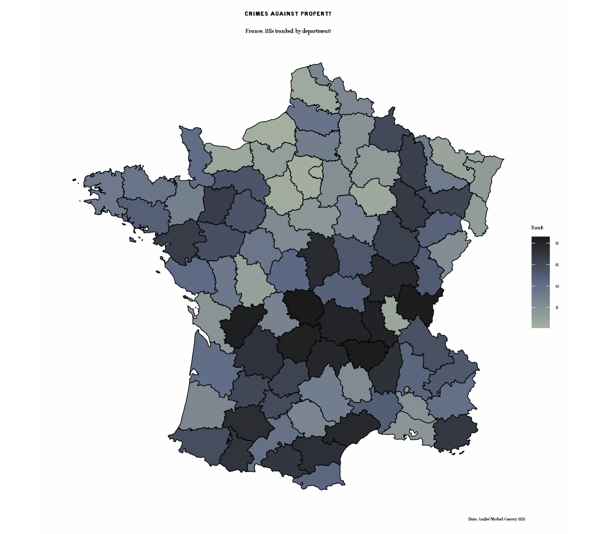
Literacy (Grouped Palette)
# Create quintiles for discrete display
france_data$Literacy_quint <- cut(france_data$Literacy_rank,
breaks = quantile(france_data$Literacy_rank,
probs = seq(0, 1, 0.2),
na.rm = TRUE),
include.lowest = TRUE,
labels = c("Lowest", "Low", "Medium", "High", "Highest"))
p3 <- ggplot(france_data) +
geom_sf(aes(fill = Literacy_quint), color = "black", linewidth = 0.3) +
scale_fill_cheysson("1881_04",
name = "Literacy\nQuintile",
na.value = "grey80") +
labs(
title = "Literacy Rates",
subtitle = "Percent of military conscripts who can read & write (quintiles)",
caption = "Data: André-Michel Guerry (1833)"
) +
theme_cheysson_map() +
theme(
plot.title = element_text(size = 16, face = "bold"),
plot.subtitle = element_text(size = 11),
legend.position = "right"
)
print(p3)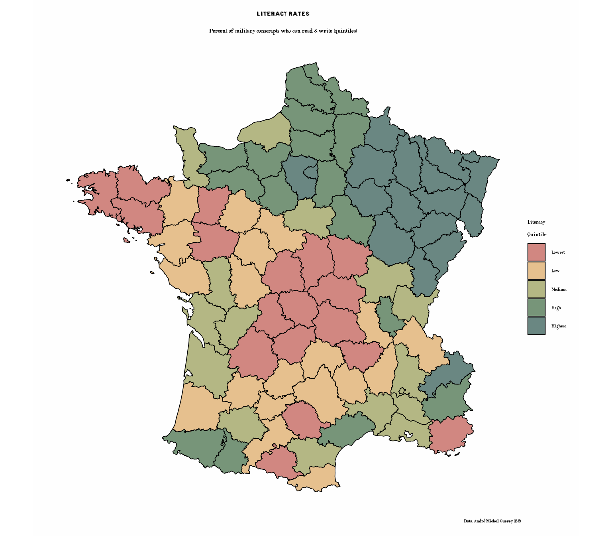
Literacy with Cheysson Patterns
Now let’s recreate the literacy map using Cheysson’s signature hatching patterns combined with colors:
# Literacy with patterns - quintessential Cheysson style
p3b <- ggplot(france_data) +
geom_sf_pattern(
aes(fill = Literacy_quint,
pattern_type = Literacy_quint,
pattern_fill = Literacy_quint),
pattern = "stripe",
pattern_density = 0.3,
pattern_spacing = 0.02,
color = "black",
linewidth = 0.4
) +
scale_fill_cheysson_pattern("1881_04", na.value = "grey90") +
scale_pattern_fill_cheysson("1881_04", na.value = "grey90") +
scale_pattern_type_cheysson("1881_04") +
labs(
title = "Literacy Rates with Cheysson Patterns",
subtitle = "Combining colors and hatching patterns (quintiles)",
caption = "Data: André-Michel Guerry (1833)"
) +
theme_cheysson_map() +
theme(
plot.title = element_text(size = 16, face = "bold"),
plot.subtitle = element_text(size = 11),
legend.position = "right"
) +
guides(
fill = guide_legend(title = "Literacy\nQuintile"),
pattern_type = guide_legend(title = "Literacy\nQuintile"),
pattern_fill = "none"
)
print(p3b)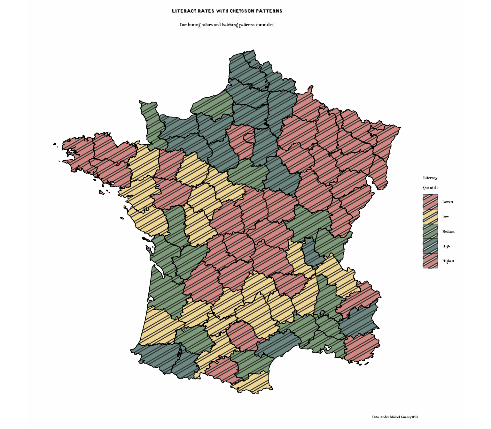
Charitable Donations (Category Palette)
# Create categories
france_data$Donations_cat <- cut(france_data$Donations_rank,
breaks = quantile(france_data$Donations_rank,
probs = seq(0, 1, 0.25),
na.rm = TRUE),
include.lowest = TRUE,
labels = c("Low", "Medium-Low", "Medium-High", "High"))
p4 <- ggplot(france_data) +
geom_sf(aes(fill = Donations_cat), color = "black", linewidth = 0.3) +
scale_fill_cheysson("1883_04",
name = "Donations\nLevel",
na.value = "grey80") +
labs(
title = "Charitable Donations",
subtitle = "Donations to the poor (quartiles)",
caption = "Data: André-Michel Guerry (1833)"
) +
theme_cheysson_map() +
theme(
plot.title = element_text(size = 16, face = "bold"),
plot.subtitle = element_text(size = 12),
legend.position = "right"
)
print(p4)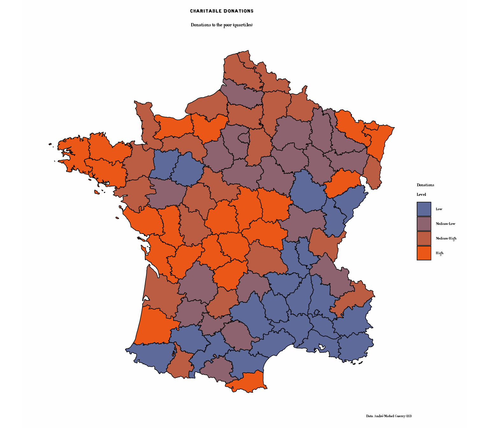
Donations with Cheysson Patterns
The combination of colors and patterns was a hallmark of the Albums. Here’s the donations map in authentic Cheysson style:
# Donations with varied pattern types
p4b <- ggplot(france_data) +
geom_sf_pattern(
aes(fill = Donations_cat,
pattern_type = Donations_cat,
pattern_fill = Donations_cat),
pattern = "stripe",
pattern_density = 0.35,
pattern_spacing = 0.025,
color = "black",
linewidth = 0.4
) +
scale_fill_cheysson_pattern("1883_04", na.value = "grey90") +
scale_pattern_fill_cheysson("1883_04", na.value = "grey90") +
scale_pattern_type_cheysson("1883_04") +
labs(
title = "Charitable Donations with Hatching Patterns",
subtitle = "Authentic Cheysson-style patterns and colors (quartiles)",
caption = "Data: André-Michel Guerry (1833)"
) +
theme_cheysson_map() +
theme(
plot.title = element_text(size = 16, face = "bold"),
plot.subtitle = element_text(size = 11),
legend.position = "right"
) +
guides(
fill = guide_legend(title = "Donations\nLevel"),
pattern_type = guide_legend(title = "Donations\nLevel"),
pattern_fill = "none"
)
print(p4b)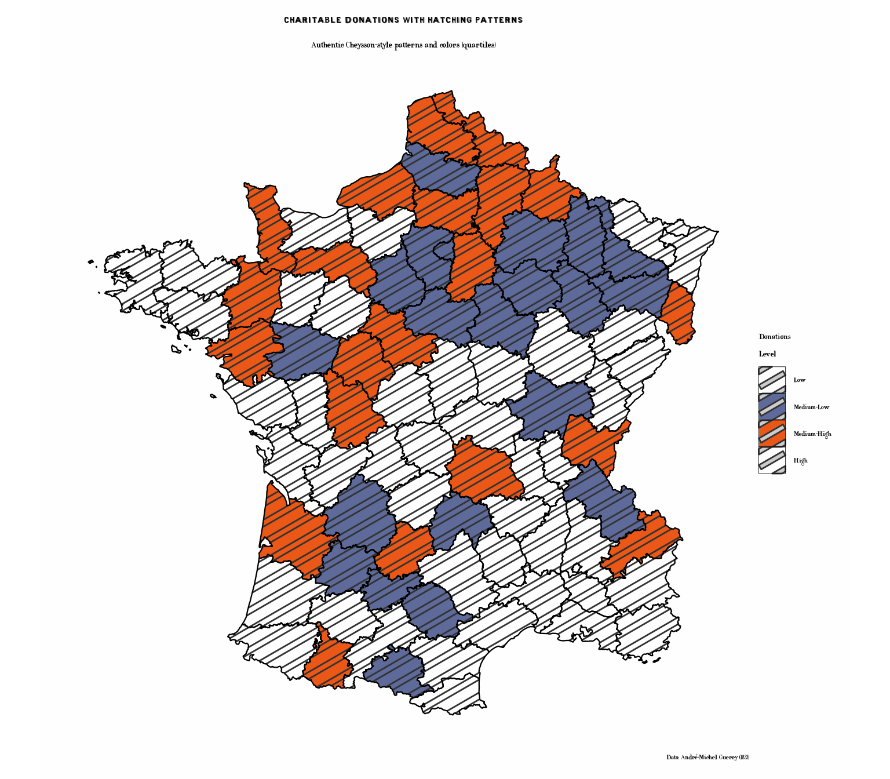
Illegitimate Births (Sequential Palette)
p5 <- ggplot(france_data) +
geom_sf(aes(fill = Infants_rank), color = "black", linewidth = 0.3) +
scale_fill_cheysson("1891_07", discrete = FALSE,
name = "Rank") +
labs(
title = "Illegitimate Births",
subtitle = "Population per illegitimate birth (ranked by department)",
caption = "Data: André-Michel Guerry (1833)"
) +
theme_cheysson_map() +
theme(
plot.title = element_text(size = 16, face = "bold"),
plot.subtitle = element_text(size = 12),
legend.position = "right"
)
print(p5)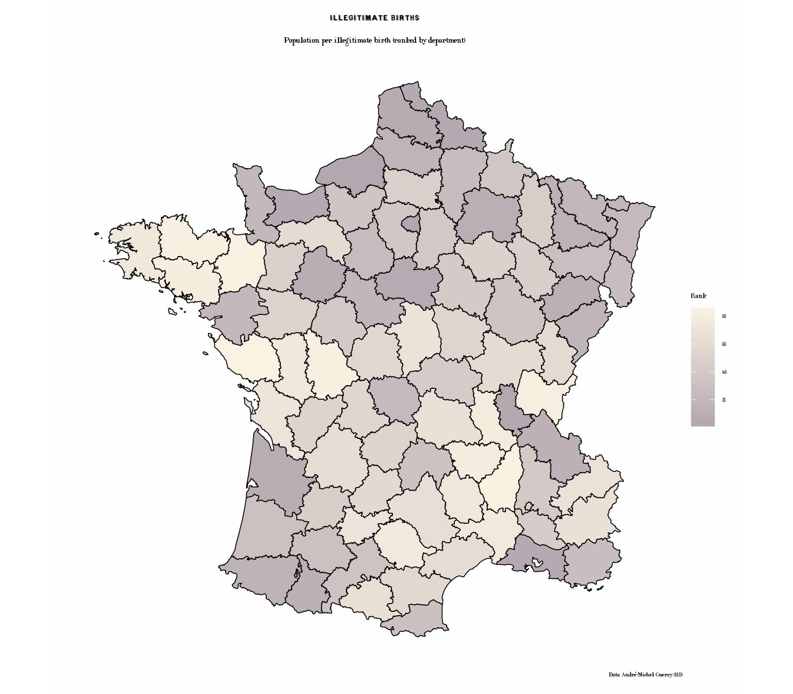
Suicides (Different Sequential Palette)
p6 <- ggplot(france_data) +
geom_sf(aes(fill = Suicides_rank), color = "black", linewidth = 0.3) +
scale_fill_cheysson("1887_06", discrete = FALSE,
name = "Rank") +
labs(
title = "Suicides",
subtitle = "Annual suicides per population (ranked by department)",
caption = "Data: André-Michel Guerry (1833)"
) +
theme_cheysson_map() +
theme(
plot.title = element_text(size = 16, face = "bold"),
plot.subtitle = element_text(size = 12),
legend.position = "right"
)
print(p6)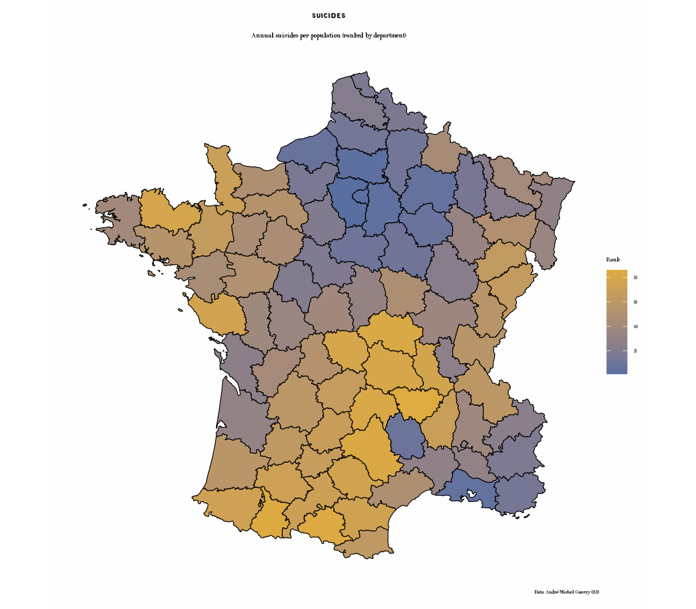
Small Multiples: Comparing Crime Types
Create a faceted map showing multiple variables at once:
# Prepare data in long format for faceting
library(tidyr)
library(dplyr)
crime_long <- france_data |>
st_as_sf() |>
select(Department, Crime_pers_rank, Crime_prop_rank,
Literacy_rank, Suicides_rank) |>
pivot_longer(cols = ends_with("_rank"),
names_to = "Variable",
values_to = "Rank") |>
mutate(Variable = recode(Variable,
"Crime_pers_rank" = "Crimes Against Persons",
"Crime_prop_rank" = "Property Crimes",
"Literacy_rank" = "Literacy Rate",
"Suicides_rank" = "Suicides"))
p7 <- ggplot(crime_long) +
geom_sf(aes(fill = Rank), color = "grey30", linewidth = 0.2) +
scale_fill_cheysson("1895_04", discrete = FALSE,
name = "Rank") +
facet_wrap(~ Variable, ncol = 2) +
labs(
title = "Social Statistics of France, 1830s",
subtitle = "Four measures of moral statistics (ranked by department)",
caption = "Data: André-Michel Guerry (1833)"
) +
theme_cheysson_map() +
theme(
plot.title = element_text(size = 16, face = "bold"),
plot.subtitle = element_text(size = 12),
strip.background = element_rect(fill = "#edd493", color = "black"),
strip.text = element_text(size = 10, face = "bold"),
legend.position = "bottom",
legend.key.width = unit(2, "cm")
)
print(p7)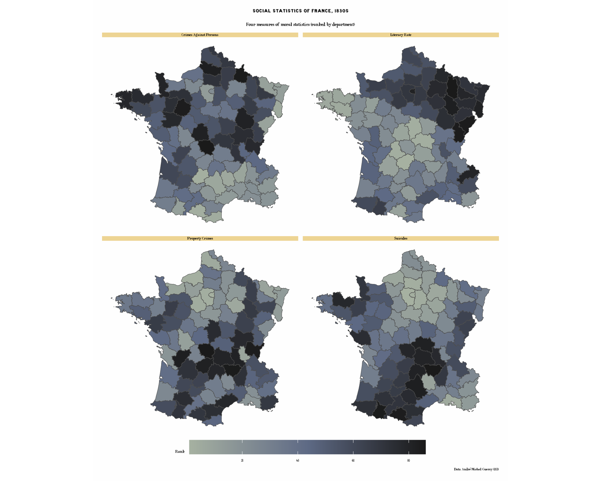
Regional Patterns
Let’s also examine regional patterns using discrete categories:
# Map showing regions
# Note: After merge, Region column may be duplicated as Region.x or Region.y
# We'll use the spatial data version (Region.x) or check which exists
region_col <- if("Region" %in% names(france_data)) {
"Region"
} else if("Region.x" %in% names(france_data)) {
"Region.x"
} else {
"Region.y"
}
p8 <- ggplot(france_data) +
geom_sf(aes(fill = .data[[region_col]]), color = "black", linewidth = 0.4) +
scale_fill_cheysson("category",
name = "Region") +
labs(
title = "Regions of France",
subtitle = "Administrative divisions circa 1830",
caption = "Source: Guerry package"
) +
theme_cheysson_map() +
theme(
plot.title = element_text(size = 16, face = "bold"),
plot.subtitle = element_text(size = 12),
legend.position = "right"
)
print(p8)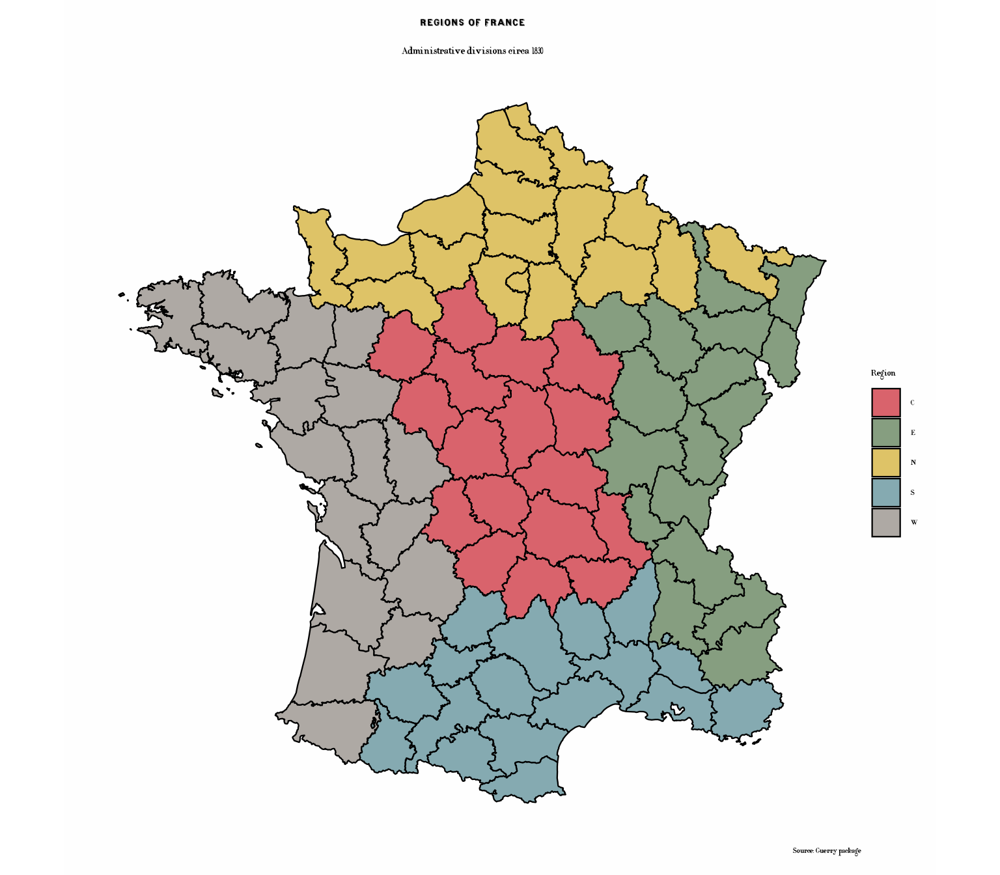
Regions with Patterns: Classic Cheysson Cartography
One of Cheysson’s most distinctive techniques was using varied hatching patterns to distinguish regions:
# Regions with distinctive patterns - very characteristic of Cheysson
p8b <- ggplot(france_data) +
geom_sf_pattern(
aes(fill = .data[[region_col]],
pattern_type = .data[[region_col]],
pattern_fill = .data[[region_col]]),
pattern = "stripe",
pattern_density = 0.3,
pattern_spacing = 0.02,
color = "black",
linewidth = 0.5
) +
scale_fill_cheysson_pattern("category") +
scale_pattern_fill_cheysson("category") +
scale_pattern_type_cheysson("category") +
labs(
title = "Regions of France with Cheysson Patterns",
subtitle = "Distinctive hatching patterns for each region - authentic Albums style",
caption = "Source: Guerry package"
) +
theme_cheysson_map() +
theme(
plot.title = element_text(size = 16, face = "bold"),
plot.subtitle = element_text(size = 11),
legend.position = "right"
) +
guides(
fill = guide_legend(title = "Region"),
pattern_type = guide_legend(title = "Region"),
pattern_fill = "none"
)
print(p8b)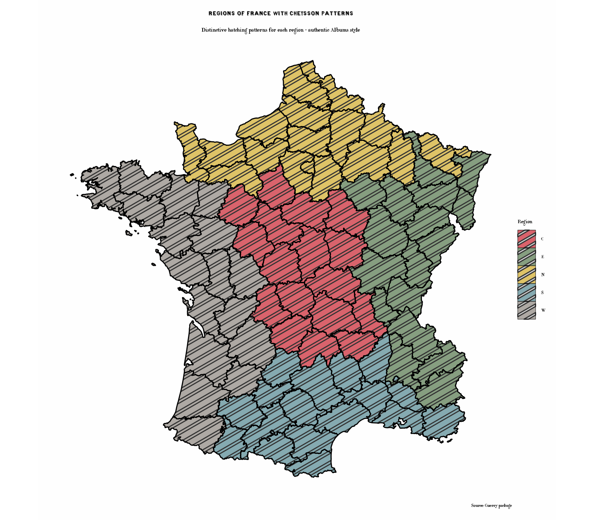
Bivariate Comparison
Compare two variables using different visual encodings:
# Create categories for both variables
france_data$Crime_cat <- cut(france_data$Crime_pers_rank,
breaks = 3,
labels = c("Low", "Medium", "High"))
france_data$Lit_cat <- cut(france_data$Literacy_rank,
breaks = 3,
labels = c("Low", "Medium", "High"))
# Create bivariate category
france_data$Bivariate <- paste0(france_data$Crime_cat, "\n",
france_data$Lit_cat, " Literacy")
# Plot
p9 <- ggplot(france_data) +
geom_sf(aes(fill = Crime_pers_rank), color = "black", linewidth = 0.5) +
scale_fill_cheysson("1895_04", discrete = FALSE, name = "Crime\nRank") +
# Add point symbols sized by literacy
geom_sf_text(aes(label = ifelse(Literacy_rank > 70, "H",
ifelse(Literacy_rank < 25, "L", ""))),
size = 3, fontface = "bold") +
labs(
title = "Crime vs. Literacy",
subtitle = "Crime Against Persons (color) and Literacy (H=High, L=Low)",
caption = "Data: André-Michel Guerry (1833)"
) +
theme_cheysson_map() +
theme(
plot.title = element_text(size = 16, face = "bold"),
plot.subtitle = element_text(size = 11)
)
print(p9)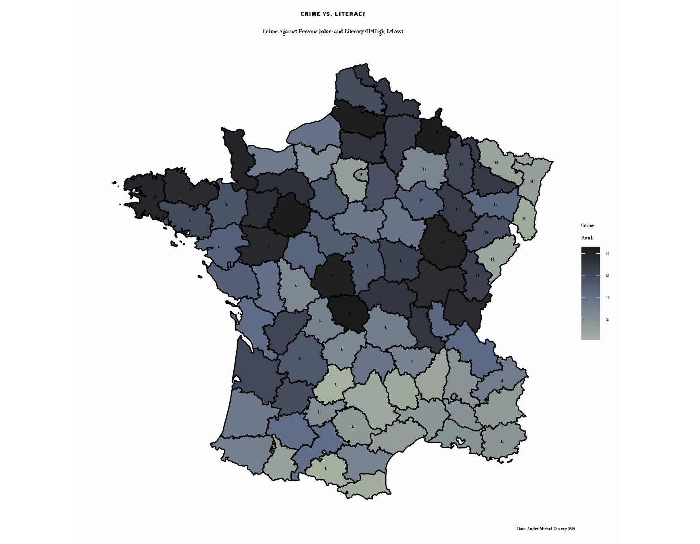
Historical Context
About Guerry’s Data
André-Michel Guerry (1802-1866) was a French lawyer and statistician who pioneered the use of statistical graphics and thematic maps. His 1833 Essai sur la statistique morale de la France was one of the first works to:
- Use choropleth maps to visualize social data
- Examine geographical patterns in crime, literacy, and social indicators
- Apply statistical methods to moral and social questions
About the Variables
- Crime_pers: Crimes against persons (per capita)
- Crime_prop: Crimes against property (per capita)
- Literacy: Percent of military conscripts who can read and write
- Donations: Donations to the poor (per capita)
- Infants: Population per illegitimate birth
- Suicides: Annual suicides (per capita)
Available Palettes
The ggCheysson package includes multiple palettes suitable for choropleth maps:
# Sequential palettes (good for continuous rankings)
list_cheysson_pals("sequential")
#> name type album plate n_colors
#> 1 1881_03 sequential 1881 3 1
#> 2 1886_04 sequential 1886 4 2
#> 3 1888_05 sequential 1888 5 1
#> 4 1891_06 sequential 1891 6 1
#> 5 1891_07 sequential 1891 7 2
#> 6 1895_04 sequential 1895 4 3
#> 7 1900_06 sequential 1900 6 2
# Grouped palettes (good for categories)
list_cheysson_pals("grouped")
#> name type album plate n_colors
#> 1 1881_08 grouped 1881 8 5
#> 2 1882_04 grouped 1882 4 2
#> 3 1886_08 grouped 1886 8 4
#> 4 1887_06 grouped 1887 6 2
#> 5 1891_03 grouped 1891 3 2
# Category palettes (good for discrete regions)
list_cheysson_pals("category")
#> name type album plate n_colors
#> 1 1880_07 category 1880 7 7
#> 2 1881_04 category 1881 4 4
#> 3 1883_06 category 1883 6 4
#> 4 1886_07 category 1886 7 3
#> 5 1906_04 category 1906 4 4
#> 6 1906_06 category 1906 6 6Note: When using discrete = FALSE, even
category palettes can create smooth color gradients for continuous data.
The package includes: - 7 Sequential palettes (varying colors: 1-3) - 2
Diverging palettes (2-3 colors) - 5 Grouped palettes (2-5 colors) - 6
Category palettes (3-7 colors)
Summary
This vignette demonstrated:
- Converting SpatialPolygonsDataFrame to sf objects for ggplot2
- Joining spatial and tabular data
- Creating choropleth maps with various Cheysson color palettes
- Using Cheysson hatching patterns combined with colors - a signature feature of the Albums
- Applying
geom_sf_pattern()with pattern scales for authentic Cheysson cartography - Using
theme_cheysson_map()for cartographic styling - Displaying multiple maps in faceted layouts
- Combining historical data with historical cartographic styles
Key Cheysson Techniques Illustrated
The pattern-enhanced maps (literacy, donations, and regions) showcase Cheysson’s most distinctive cartographic innovation: combining colors with hatching patterns. This dual encoding:
- Enhances visual distinction between categories
- Creates rich, textured maps characteristic of 19th century statistical graphics
- Improves readability and aesthetic appeal
- Provides redundant encoding (both color and pattern) for better accessibility
These techniques defined the visual language of the Albums de Statistique Graphique and influenced statistical cartography for decades.
The combination of Guerry’s groundbreaking statistical data with Cheysson’s elegant visual style creates a fitting tribute to the pioneers of statistical graphics and thematic cartography.
References
- Guerry, A.-M. (1833). Essai sur la statistique morale de la France. Paris: Crochard.
- Friendly, M. (2007). A.-M. Guerry’s Moral Statistics of France: Challenges for Multivariable Spatial Analysis. Statistical Science, 22(3), 368-399.
- Friendly, M. (2008). The Golden Age of Statistical Graphics. Statistical Science, 23(4), 502-535.